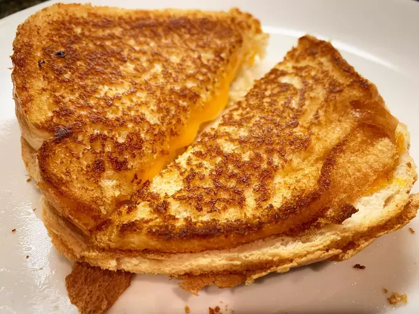

Grilled Cheese Sandwich

A true classic that is also an easy dish to make for your kids for lunch.
You cannot go wrong with a grilled cheese sandwich. Every bite feels
patriotic.
I love pairing this with tomato soup, or chicken noodle soup with a soda
on the side.
Ingredients
- 2 slices of white bread
- 1 sliced cheese
- 1 tablespoon of butter
Steps
-
Butter the bread on one side and place the bread butter-side down on a
hot skillet.
-
Top with cheese, then place another slice of bread on top (butter-side
up).
- Cook until the bottom slice is lightly browned, then flip.
- Continue cooking until the cheese is melted.